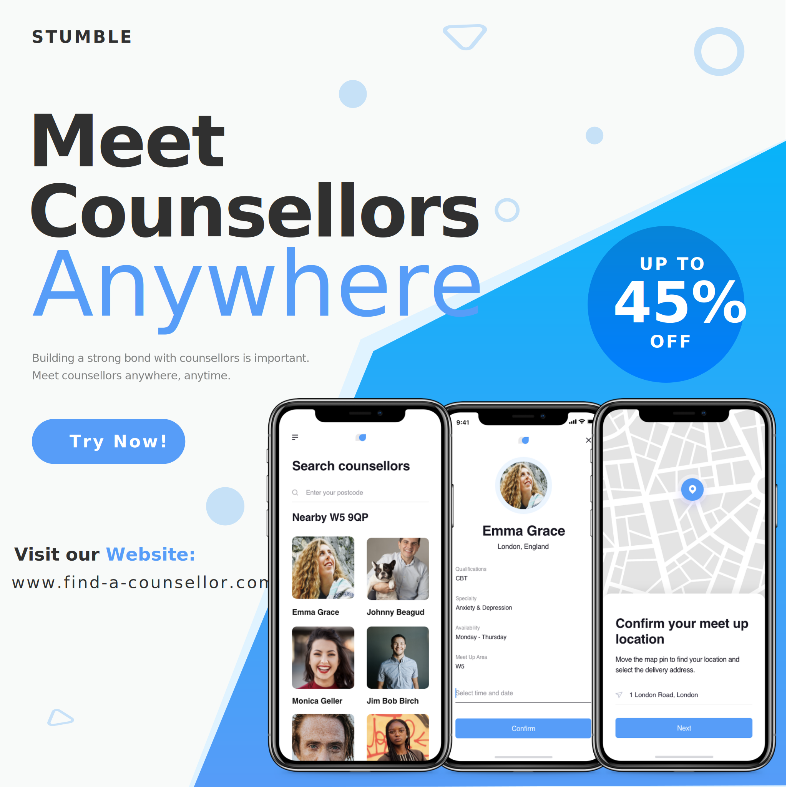

How I Built a "Start-Up" in Two Days
Start-up Development Paralysis – a term I’ve made up after working with many founders and co-founders. What does it actually mean?
Well, to me it’s simply when a start-up is caught up on the “big picture” aspect and loses focus on “how do I solve problems easily”. I always remind the people I work with first, “Solve one problem”, second, “Solve one problem many (many) times”, third “Solve one problem many (many) times very well” and lastly.
"Solve more than one problem many many times and very very well"
Oftentimes the Paralysis consists of one bad habit, building many things and delaying the problem-solving aspect of the business proposition. WHO’S PROBLEM CAN I SOLVE IMMEDIATELY? From my experience being within the start-up industry, I’m sharing with you my secret recipe to “lift off” within two days.
Here are the skills you need to do exactly what I did in building a start-up in two days.
- Basic HTML CSS knowledge
- Basic design skills
- A great idea
- Positive attitude
Here are the tools, account and software you’ll need:
- Adobe XD (To design your prototype)
- VS Code (To write your codes)
- Github (To store your codes)
- Netlify (To host your website)
- Google Analytics
- Hotjar Account
- Facebook Account (To promote your website)
First thing’s first I am a real…—Okay there is a caveat to this post. I SKIPPED MARKETING RESEARCH AND USER INTERVIEWS. It is up to entrepreneurs like you to do it and validate your early-stage ideas before forming your prototype. Although one could argue that using this strategy is another way to validate market research, features and business proposition at a pre-build stage.
I came up with an idea called Stumble. What is Stumble? Stumble is an app where users can meet counsellors informally anywhere. That’s it. I stopped right there because there is no point overcomplicating your business proposition at an early stage. You are trying to test your hypothesis that if you exist, you will solve problems for people and profit from it.
Now, I’ve formed the first iteration of my idea. What should I do next? I opened up my prototyping software, Adobe XD, and a template of mine, and worked on 3 key components I wanted to show the audience. Here’s the thought behind choosing the components - out of the five What Who When How Why – the utter basic fallible information-gathering techniques human beings use on a day-to-day survival mechanism, I chose What, How and Who. Hence, the prototyping decision led to 3 mobile app screens to show users how the app will work from searching for a counsellor, looking at a counsellor’s profile and setting up a meet up location.
- The What – Search counsellors
- The Who (lol) – Look at a counsellor’s profile
- The How – Postcode booking
If you’re wondering, why did I choose a mobile app design? That’s primarily to test the hypothesis whether or not a mobile app for an informal counselling meet up would be the best channel for the market. We never know until the market respond to our proposition. A little bit of a tech talk is that trying to validate your ideas through smaller screens does give some sort of value to your start up.
What is it?
The Stack Race.
Little bit of a de-tour. Developers are people who write in different languages. I will make it easy for you, WEB APPLICATIONS developers are much cheaper than MOBILE developers. However, with the web you can get decent developers to wrap the system into a mobile app. But hold this thought, we do not want to enter the development cycle yet at this point. Just designs, deploy and validate. Because you can have Web apps rendered in smaller viewports or you can also have Native Apps. We'll talk about development planning in the next blog post.
Okay let's recap
Have I spent thousands of pounds building something people don’t want?
No.
Have I spent a lot of time finding a co-founder online to build something people don’t need?
No.
Again, remember the caveat is that we don’t know if counsellors are licensed to meet people outside of their working environment and we don’t know safeguarding policies etc. But that’s stuff for later. Now we just need to know “IF WE EXIST, DO WE SOLVE YOUR PROBLEM?”
Okay step two. The fun part. Make yourself a website and add the images you’ve done on Adobe XD. License free templates give you the agile-ness of deployment, however I would not suggest releasing it onto production unless you really know the codes in and out. Often times the look and feel of the website template looks good but there’s so much junk you really don’t need, and it will only get worse. Again, save this thought for later. We’re still validating.
Here’s a snippet of a few assets (mockup images) I created in order to fit Stumble’s business proposition. Once that is all done, we will move onto injecting some JavaScript for analytics.
If you have any questions with these steps and need some help, you can always drop me an email at eddy@palliate-ai.com
Let's move onto the next step.
"If you have no clue HOW people perceive your proposition then you’re in big trouble."
Entrepreneurs must always be creative at finding ways to learn more about what people think about your product. There are many UXR methods out there to help us get to know our potential users but for this I suggest sticking to the utter basics = talk to them.
Ask them to tell you what they do not like about your product because that's the only way to improve your business proposition.
Okay. Step three. Let's get to know our potential users by using ready made marketing tools. We will need to configure oour meta tags, google analytics and Hotjar.
As you can see, I’ve bought a domain called find-a-counsellor.com and set all the tags to find a counsellor. There are many tools out there to help you refine your tags optimally. Search for Social Listening on Google and have a quick dive on it. Talkwalker is pretty good. Google Keyword Planner is good. At this stage, it’s a trial and error stage. You may think that this is the best way to get traffic in, but the market will tell you how to write it, you just have to observe.
Also I do suggest to test your tags in phases. Per se Week 1 - "Find a counsellor" and gather analytics. Week 2 - "Find a counsellor near you". Repeat until you have a good incremental trend.
Steg four - Now push the codes on GitHub and link it through Netlify and deploy your site. Buy yourself a domain and then patch it. It’s gonna be tricky at first if you’ve never done it but you’ll be okay – it’s not rocket science. If you've taken the other option of using either Wix or SquareSpace, it's cool too, all the SEO tools should be there for you to use. Once you’ve done it, well done. Build your first prototype, deployed for the first website, ready to brave the storm.
Pat yourself on the back.
When it comes to building a start-up there's not really a right or wrong. How would you know if you're doing the steps correctly?
I suggest spending a little bit more time on Facebook for Developer’s Sharing Debugger. Debugger is a free tool that helps you configure your website metatags correctly.
Wait a minute - in order to make money you must spend money.
Right now, what is currently deployed is basically a dud. Nobody can find your website “organically”. Currently the website is sitting deep within the matrix of whichever server it is on that Netlify assigned it to be. We need to get it out there.
Either Facebook or Google Ads – that’s entirely up to you. They’re different ad services and just pick one or pick both if you like and test your messages. You can generate your advert banners using Canva, Illustrator or even Powerpoint.
Now the REAL agile cycle begins. Keep gathering feedback, challenge your proposition, talk to potential users, and keep testing your message. Repeat the cycle until you find the sweet spot on how to market your proposition. With the analytics tools installed, comes the biggest question.
"I can see an upward trend of web traffice, what do I do next?"
There are many options at this point. You can either find yourself a CTO to help build the app, or open a fundraising round with an active investor. You could also pitch this idea to business accelrators to help push forward the next steps of bringing this product to life. Or even invest using your own capital to build the product. Whichever route you choose, would probably the second best route - because only after executing your